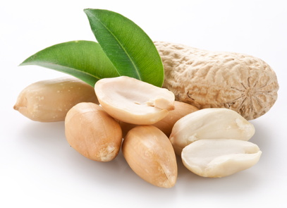

Peanut (Arachis hypogaea)

Mating & Breeding System: The peanut plant is a legume, with a floral structure typical of the family. The plant is unusual in that, following fertilization, the flowers wither and turn downward, and the ovary forms a 'peg' that pushes down into the soil. The seeds then develop in pods buried in the soil.
Generally, the anthers will release pollen within the closed flower and self-fertilize. However, at least one study found a high percentage of peanut flowers were tripped by foraging bees. Many different insects have been observed visiting peanut flowers; however these flowers are only a minor source of pollen and produce only small amounts of nectar.
Pollination, Quality & Yield: Some yield improvements have been observed with both honey bees and wild flower visitors. Insect activity can improve number and weight of the resulting seeds, likely by increasing the amount of pollen that contacts the stigma. Modest increases of 6-11% have been reported. However, a recent study in Australia found no improvements in yield associated with the activities of honey bees or wild bees.
Pollination Recommendations: Small bees, such as those in family Halictidae, seem best suited for manipulating peanut flowers and obtaining resources, although large bees are likely more able to trip the flowers. Honey bees will also visit peanut flowers to collect nectar, but do not seem to collect pollen or be as effective at moving it.
Peanut growers wishing to experiment with the effects of insects on their crops should consider conservation measures that encourage small, ground-nesting bees, in addition to the possibility of adding honey bees to their fields during the bloom. However, the economic value of the increase in yield may not justify the cost of honey bee pollination, except possibly in large plantations or fields with very poor wild bee populations.
References
Blanche, K.R., Hughes, M., Ludwig, J.A., & Cunningham, S.A. 2006. Do flower-tripping bees enhance yields in peanut varieties grown in north Queensland? Australian Journal of Experimental Agriculture 46:1529-1534.
Free, J.B. 1993. Insect Pollination of Crops, 2nd edition. Academic Press.
Girardeau, J. H. & Leuck, D. B. 1967. Effect of mechanical and bee tripping on yield of the peanut. Journal of Economic Entomology 60:1454-1455.
Leuck, D.B. & Hammons, R. O. 1965a. Pollen-collecting activities of bees among peanut flowers. Journal of Economic Entomology 58:1028-1030.
Leuck, D.B. & Hammons, R.O. 1965b. Further evaluation of the role of bees in natural cross-pollination of the peanut, Arachis hypogaea L. Agronomy Journal 57:94.